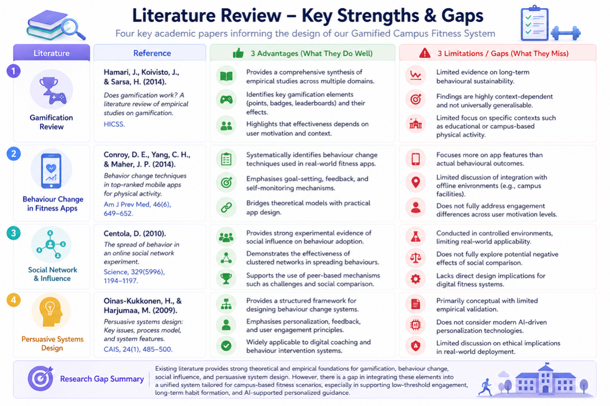

1.1 Track Selection Reason
Our group strictly chose the Active Campus Health Promotion Track as the core project direction, focusing on solving the prevalent fitness dilemma among contemporary college students. Under the background of the national Healthy China strategy and college physical education basic work requirements, most college students lack spontaneous exercise awareness, cannot adhere to long-term fitness plans, and have no professional exercise guidance and continuous exercise motivation. Unlike heritage and social public welfare tracks, the active fitness track is closely integrated with students’ daily campus life, with clear user groups, obvious pain points and strong practical landing value. We adopt gamification as the core design logic, lowering the exercise participation threshold through check-in mechanisms, ranking incentives and social interaction modules, effectively solving the problems of difficult exercise initiation, low long-term persistence and lack of professional guidance for students. This track fits our system design positioning perfectly, can quickly verify design effects through real campus user tests, and achieves the dual goals of improving students’ physical activity level and forming long-term healthy fitness habits.
1.2 Research Gap Analysis


1.3 Stakeholder User Persona Definition
1.3.1 Primary Users
User Persona 1: Lazy Beginner College Students: Freshmen and sophomores with no fixed exercise habits, low fitness foundation, lack of exercise self-discipline, always procrastinate to start fitness, unable to adhere to long-term exercise. Core demands: low-threshold one-click exercise participation, simple and easy operation, obvious short-term exercise feedback, no complex professional fitness requirements. Pain points: afraid of difficult exercise intensity, tired of complex system operation, no motivation to take the initiative to exercise, easy to give up after trying once.
User Persona 2: Fitness Persistence Want-to-be Students: Students who have the will to keep fit but cannot form continuous habits, often interrupted exercise plans, lack of effective supervision and incentive. Core demands: continuous check-in record, real-time task progress reminder, intuitive exercise achievement display, peer mutual supervision and encouragement. Pain points: no clear exercise progress feedback, no sense of accomplishment after exercise, lack of companions to exercise together.
1.3.2 Secondary Users
User Persona 3: Students Needing Professional Fitness Guidance: Students who want to improve physical fitness and shape body, have unclear exercise methods, need professional targeted training suggestions. Core demands: AI personalized fitness plan, professional exercise action guidance, interactive Q&A consultation. Pain points: no professional coach guidance, unsuitable blind exercise easy to get injured, no targeted training arrangement.
User Persona 4: Campus Sports Administrators: College sports teachers and management staff, responsible for counting students’ daily exercise situation and promoting campus fitness construction. Core demands: intuitive student exercise data statistics, clear user participation overview, standardized data management and export. Pain points: scattered student exercise data, difficult to count participation rate, no intuitive data visualization display.
1.3.3 User Insight Summary
Based on the user research and persona analysis, several key insights were identified:
Most users lack long-term motivation due to the absence of clear progress tracking and reward feedback.
Users prefer simple and fast interactions, especially for daily check-in tasks, and tend to abandon systems with complex navigation.
Social features can increase engagement, but overly complicated interaction processes may reduce usability.
Personalized fitness guidance is highly valued, especially for users without professional coaching support.
These insights guided the subsequent design decisions, focusing on simplicity, motivation enhancement, and personalization.